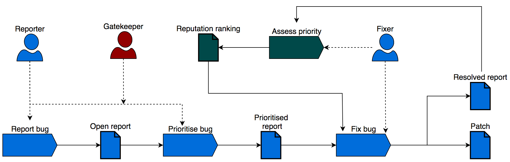

Overview
Software development processes should consider the impact of its policies in the quality of the software
product
when designed. Factors like salary scales, promotion policies and recognition mechanisms have direct
influence
in the way software artifacts are produced, hence they have impact in its quality.
An instance of this problem is observed in the bug reporting process, where testers are encouraged to
increase
the reported priority in order to maximize the number of fixes delivered. This situation — called Priority
Inflation by practitioners — is analyzed using game theory. Game theory uses mathematical models to study
conflict and cooperation, and we use them in this paper to identify inflation causes and to propose a
solution to this problem.
We built a simulation model of bug reporting as a part of our empirical game-theoretic analysis, finding that
prioritization processes from industry are is not incentive compatible since at
equilibrium the Dishonest strategy has a positive probability. We also evaluated our proposed bug
reporting process —based on inflation penalties and reporter reputation— finding that with only a 20%
penalty factor we can move equilibrium towards a profile where the Honest strategy has a
probability of 1.0.
The Priority Inflation Problem
We designed a survey to assess the magnitude of the priority inflation problem. Through convenience
sampling we were able to reach 152 software engineers, whose answers were collected using
the Google Forms platform.
14.97% of the respondents are working on projects
where the bug report priorities are
frequently
understated, while 64.63% of them work on projects
where this scenario happens occasionally
24.66% of the participants are working on projects
where priority inflation is frequent while
64.38%
of them participate on a project
where this happens occasionally. .
About 31.33% of them mention that understated/
overstated priorities have a significant impact
on
their daily duties, while 50% of
them believe the impact is minimum.
Modelling Software Processes as Games

The priority inflation game is played by bug reporters, who are in charge of discovering and
reporting the bugs that are present on a specific version of a software system. When reporting a bug, the
reporters are required to assign a priority label to a bug report, which is related to the urgency
for a fix for this bug to be delivered.
Formal game-theoretic analysis faces tractability problems when dealing with interactions among several
agents with a large number of strategies available to them. To address these issues, empirical
game-theoretic analysis relies in game reduction techniques and simulation to allow a rigorous analysis. The
empirical game-theoretic approach used in this project is described in the diagram above.
The pay-off function of a bug
reporter
depends on the number of reported bugs that got fixed as well as its reported priority. Pay-off
calculation is critical for equilibrium analysis as we need the pay-off value for each player on each
strategy profile. We rely on a simulation model of the bug reporting process
for obtaining the number
of bug reports fixed per player per strategy profile.
Diagnosing Current Practice

After defining the internals of our empirical game, we
perform the equilibrium analysis of bug prioritization processes adopted in industry.
Distributed Bug Prioritization
Is a reporting process where one engineer has assigned the bug reporting and bug prioritization responsibilities
while a different one is in charge of bug fixing.
In the figure above, it is represented by the blue components.
By applying the procedure described before, we have found an equilibrium in
pure strategies were the probability of the Dishonest strategy is 1.0 and 0.0 for the
other strategies in our catalog.
Gatekeeper Process
In a gatekeeper process, the bug reporting and bug prioritization responsibilities are assigned to
different teams.
In the figure above, it is represented by the blue and red components.
The first gatekeeper configuration explored considers that gatekeepers can detect 50% of mislabeled
priorities: The equilibrium profile obtained through the process described previously
has a probability of 1.0 for the Dishonest strategy while 0.0 for the other 6
strategies.
The same result was obtained with a detection rate of 90%.
An ideal gatekeeper with perfect detection rate produce multiple equilibria.
The Assessor-Throttling Process
We propose a process — that we call the assessor-throttling — that maintains the
decentralized prioritization attribute of unsupervised prioritization but incorporates a priority
assessment phase like in a gatekeeper process:
- The bug fixing team evaluates the bug prioritization: After developing a patch,
the
developer also assigns a priority label to the bug report, that might differ to the one assigned by the
bug
reporting team.
- Bug reporters have assigned a reputation value: In assessor-throttling we assume that
the developers have a fair understanding of the bug priority after developing its
corresponding patch. When a developer identifies a bug report with a priority label that differs from
his
assessment, he penalizes the offender by diminishing his reputation value.
- Bug fixing depends on the reporter's reputation: For a bug to be fixed
or
delayed is not only a function of its priority label, in assessor-throttling it also depends on the
reputation of the reporter.
In the figure above, assessor-throttling is represented by the blue and green components.
When we applied a dishonesty penalty of 20%, the number of equilibrium is only one where
the Honest strategy has a probability of 1.0. We obtained the same result when the
penalty value was set to 22%.
TheFed: Tool Support for Assessor-Throttling
As
part of this project we built a software
tool to support the teams that adopt assessor-throttling, since according to our analysis is the best option
to address Priority Inflation. Our tool —
called TheFed — is a Chrome extension for supporting teams that are using JIRA as
their bug tracking system.